Chapitre 4 Nombre de feuilles
4.1 Préparation des données
Jeu de données veg.csv qui contient différentes mesures dont le nombre de feuilles des plants de tomate, compté à 4 reprises :
feuil1: 55 JAS, 21 JAR, semaine 3 ARfeuil2: 69 JAS, 35 JAR, semaine 5 ARfeuil3: 76 JAS, 42 JAR, semaine 6 ARfeuil4: 83 JAS, 49 JAR, semaine 7 AR.
La question est de savoir si les différents types d’engrais induisent des qantités de feuilles significativement différentes.
##
## -- Column specification --------------------------------------------------------
## cols(
## .default = col_double(),
## traitement = col_character(),
## engrais = col_character(),
## projet = col_character(),
## site = col_character(),
## date_semis = col_date(format = ""),
## date_repiquage = col_date(format = ""),
## period_repiq = col_character(),
## date_fert_1 = col_date(format = ""),
## period_fert1 = col_character(),
## date_1 = col_date(format = ""),
## period_d1 = col_character(),
## date_2 = col_date(format = ""),
## period_d2 = col_character(),
## date_fert_2 = col_date(format = ""),
## period_fert2 = col_character(),
## date_3 = col_date(format = ""),
## period_d3 = col_character(),
## date_4 = col_date(format = ""),
## period_d4 = col_character(),
## date_5 = col_date(format = "")
## # ... with 10 more columns
## )
## i Use `spec()` for the full column specifications.df <- df %>%
mutate(id = 1:nrow(.), .before = 1) %>%
select(id, bloc, traitement, engrais, feuil1, feuil2, feuil3, feuil4) %>%
convert_as_factor(traitement, engrais)
df$engrais <- factor(df$engrais,
levels = c("Temoin", "Fumier porcs", "Fumier poulets",
"Engrais mineral", "50% FPorcs + 50% Eng. Min.",
"50% FPoulets + 50% Eng. Min."))
write_csv(df, "tab/feuilles.csv")
df_original <- df # une copie
set.seed(123)
df %>% sample_n_by(bloc, size = 1)## # A tibble: 5 x 8
## id bloc traitement engrais feuil1 feuil2 feuil3 feuil4
## <int> <dbl> <fct> <fct> <dbl> <dbl> <dbl> <dbl>
## 1 3 1 T2 Fumier poulets 6.25 8.43 10.4 13.1
## 2 12 2 T5 50% FPoulets + 50% Eng. Mi~ 8.71 11 10.3 13.1
## 3 15 3 T2 Fumier poulets 8.13 8.33 10 9.33
## 4 20 4 T1 Fumier porcs 7.88 10.4 12 11.2
## 5 26 5 T1 Fumier porcs 8.88 11.1 11.5 11.54.2 Feuilles 1
4.2.1 Visualisation, boxplots
bxp <- ggplot(df, aes(x = engrais, y = feuil1)) +
geom_boxplot() +
theme_bw() +
xlab("Engrais") + ylab("Nombre de feuilles") +
theme(axis.text.x = element_text(angle = 45, color = "black", vjust = 1, hjust = 1))
bxp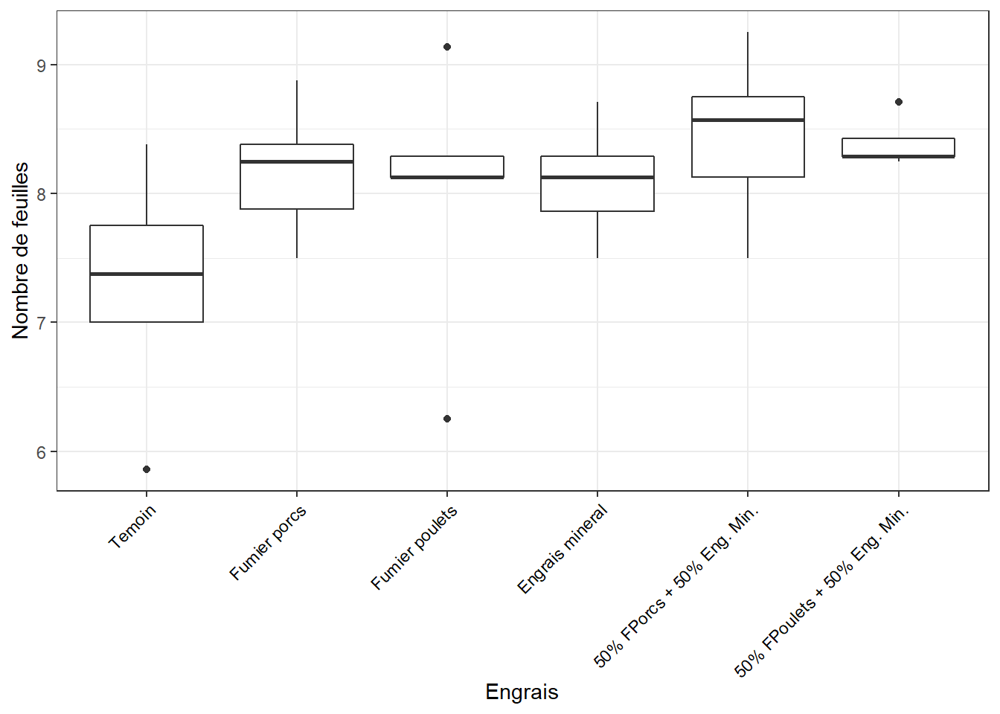
4.2.2 Identification des échantillons aberrants et extêmes
df_out <- df %>%
group_by(engrais) %>%
identify_outliers(feuil1) %>%
select(id, engrais, bloc, feuil1, is.outlier, is.extreme)
df_out## # A tibble: 4 x 6
## id engrais bloc feuil1 is.outlier is.extreme
## <int> <fct> <dbl> <dbl> <lgl> <lgl>
## 1 1 Temoin 1 5.86 TRUE FALSE
## 2 3 Fumier poulets 1 6.25 TRUE TRUE
## 3 9 Fumier poulets 2 9.14 TRUE TRUE
## 4 12 50% FPoulets + 50% Eng. Min. 2 8.71 TRUE FALSEIl y a 2 observations aberrantes extrêmes. Pas exclues !
4.2.3 Le modèle ANOVA
## Anova Table (Type II tests)
##
## Response: feuil1
## Sum Sq Df F value Pr(>F)
## engrais 4.4714 5 1.8156 0.1478
## Residuals 11.8211 24À la semaine 3 après le repiquage, il ne serait pas encore possible d’établir des différences significatives entre les effets des traitements sur le nombre de feuilles des plants. Mais vérifions les conditions de validité de l’ANOVA.
4.2.5 Normalité des résidus
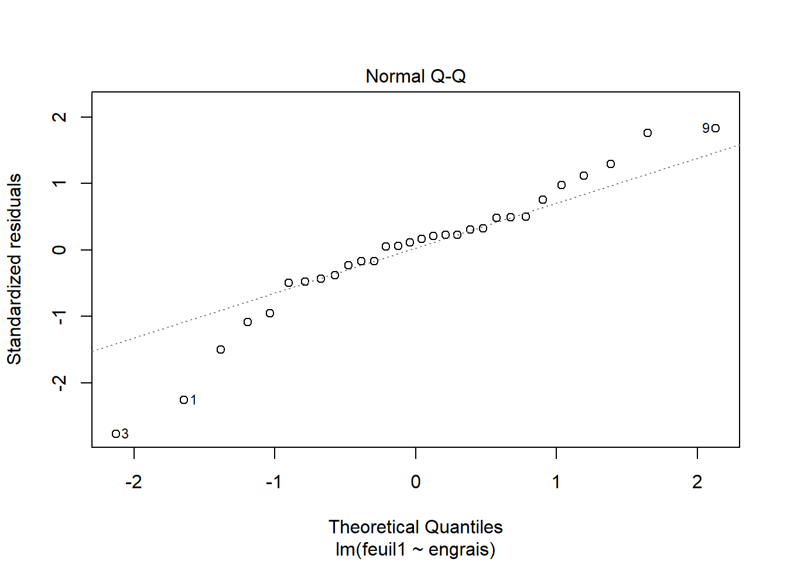
## # A tibble: 1 x 3
## variable statistic p.value
## <chr> <dbl> <dbl>
## 1 residuals(lm1) 0.945 0.1254.2.6 Homogénéité des variances
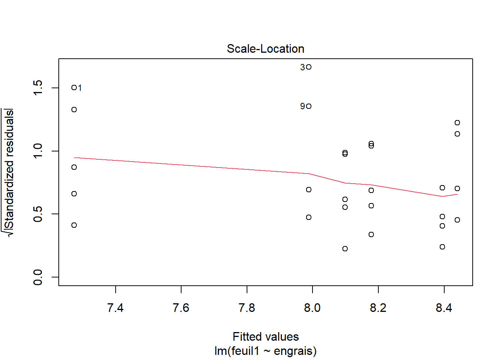
## # A tibble: 1 x 4
## df1 df2 statistic p
## <int> <int> <dbl> <dbl>
## 1 5 24 0.815 0.551On retient que la conclusion de l’ANOVA peut être considérée valide : => Pas de différence d’effet sur le nombre de feuilles des plants à cette date.
4.2.7 Comparaisons par paires
Tests post-hoc de comparaisons par paires entre les groupes (ici, les engrais).
4.2.8 Graph des comparaisons
4.2.9 Lettres pour différencier
## Temoin Fumier porcs
## "a" "a"
## Fumier poulets Engrais mineral
## "a" "a"
## 50% FPorcs + 50% Eng. Min. 50% FPoulets + 50% Eng. Min.
## "a" "a"4.2.10 Les lettres dans un dataframe pour ggplot
## engrais lettres
## Temoin Temoin a
## Fumier porcs Fumier porcs a
## Fumier poulets Fumier poulets a
## Engrais mineral Engrais mineral a
## 50% FPorcs + 50% Eng. Min. 50% FPorcs + 50% Eng. Min. a
## 50% FPoulets + 50% Eng. Min. 50% FPoulets + 50% Eng. Min. a4.2.11 Associer les moyennes et les écart-types pour le rapport
feuil1_moy <- df %>%
group_by(engrais) %>%
get_summary_stats(feuil1, type = "mean_sd") %>%
select(-variable) %>%
mutate(lettres = L$lettres)
write_csv(feuil1_moy, "tab/feuille1_moyennes.csv")
feuil1_moy## # A tibble: 6 x 5
## engrais n mean sd lettres
## <fct> <dbl> <dbl> <dbl> <chr>
## 1 Temoin 5 7.27 0.94 a
## 2 Fumier porcs 5 8.18 0.521 a
## 3 Fumier poulets 5 7.99 1.06 a
## 4 Engrais mineral 5 8.10 0.455 a
## 5 50% FPorcs + 50% Eng. Min. 5 8.44 0.661 a
## 6 50% FPoulets + 50% Eng. Min. 5 8.39 0.189 a4.2.12 Graphe avec les comparaisons
ggplot(feuil1_moy, aes(x = engrais, y = mean)) +
geom_bar(stat = "identity", color = "blue", fill = "grey", width = 0.6) +
ylim(0, 9) +
theme_bw() +
xlab("Engrais") + ylab("Nombre de feuilles") +
theme(axis.text.x = element_text(angle = 45, color = "black", vjust = 1, hjust = 1)) +
geom_text(aes(label = lettres), vjust = -0.5, size = 4)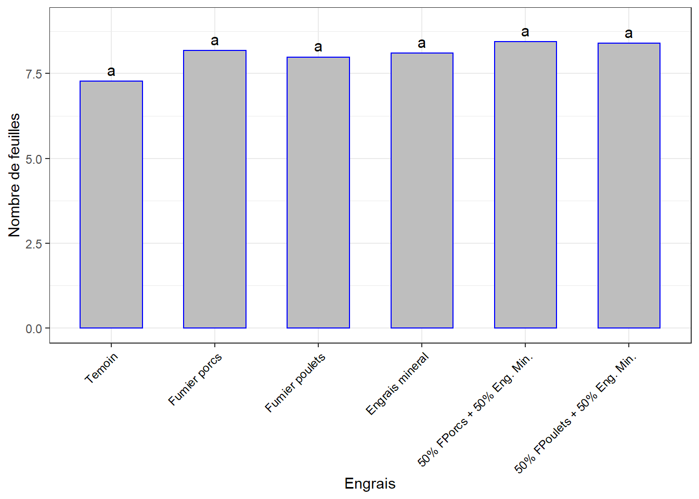
4.3 Feuilles 2
4.3.1 Visualisation, boxplots
bxp <- ggplot(df, aes(x = engrais, y = feuil2)) +
geom_boxplot() +
theme_bw() +
xlab("Engrais") + ylab("Nombre de feuilles") +
theme(axis.text.x = element_text(angle = 45, color = "black", vjust = 1, hjust = 1))
bxp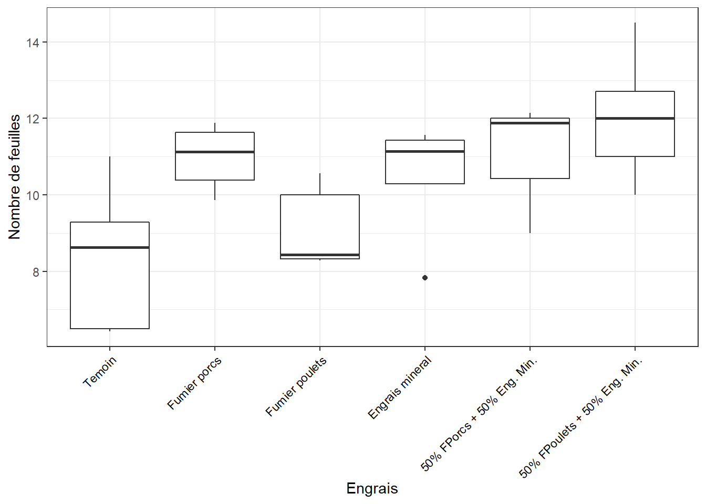
4.3.2 Identification des échantillons aberrants et extêmes
df_out <- df %>%
group_by(engrais) %>%
identify_outliers(feuil2) %>%
select(id, engrais, bloc, feuil2, is.outlier, is.extreme)
df_out## # A tibble: 1 x 6
## id engrais bloc feuil2 is.outlier is.extreme
## <int> <fct> <dbl> <dbl> <lgl> <lgl>
## 1 10 Engrais mineral 2 7.83 TRUE FALSEIl n’y a pas d’observation aberrante extrême.
4.3.3 Le modèle ANOVA
## Anova Table (Type II tests)
##
## Response: feuil2
## Sum Sq Df F value Pr(>F)
## engrais 46.179 5 4.3199 0.006053 **
## Residuals 51.311 24
## ---
## Signif. codes: 0 '***' 0.001 '**' 0.01 '*' 0.05 '.' 0.1 ' ' 1À la semaine 5 après le repiquage, au moins deux types d’engrais ont des effets très significativement différents sur le nombre de feuilles des plants. Mais vérifions les conditions de validité de l’ANOVA.
4.3.5 Normalité des résidus
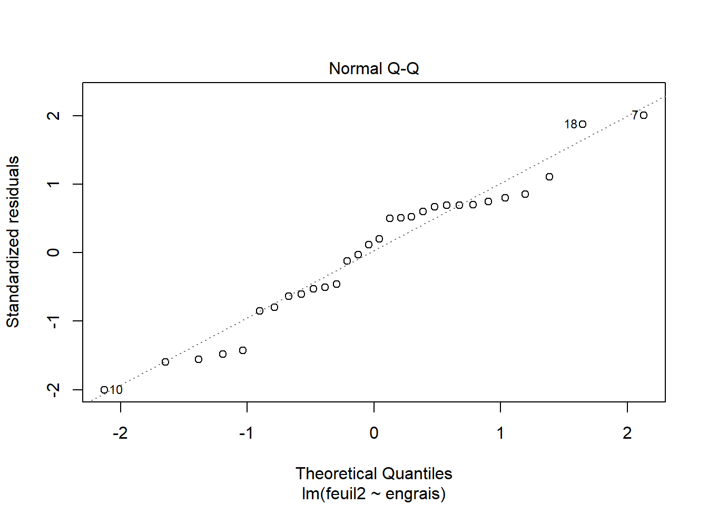
## # A tibble: 1 x 3
## variable statistic p.value
## <chr> <dbl> <dbl>
## 1 residuals(lm2) 0.959 0.2884.3.6 Homogénéité des variances

## # A tibble: 1 x 4
## df1 df2 statistic p
## <int> <int> <dbl> <dbl>
## 1 5 24 0.403 0.842On retient que la conclusion de l’ANOVA peut être considérée valide. Trouvons les engrais dont les effets sont différents.
4.3.7 Comparaisons par paires
##
## Simultaneous Tests for General Linear Hypotheses
##
## Multiple Comparisons of Means: Tukey Contrasts
##
##
## Fit: lm(formula = feuil2 ~ engrais, data = df)
##
## Linear Hypotheses:
## Estimate
## Fumier porcs - Temoin == 0 2.6060
## Fumier poulets - Temoin == 0 0.7540
## Engrais mineral - Temoin == 0 2.0820
## 50% FPorcs + 50% Eng. Min. - Temoin == 0 2.7200
## 50% FPoulets + 50% Eng. Min. - Temoin == 0 3.6720
## Fumier poulets - Fumier porcs == 0 -1.8520
## Engrais mineral - Fumier porcs == 0 -0.5240
## 50% FPorcs + 50% Eng. Min. - Fumier porcs == 0 0.1140
## 50% FPoulets + 50% Eng. Min. - Fumier porcs == 0 1.0660
## Engrais mineral - Fumier poulets == 0 1.3280
## 50% FPorcs + 50% Eng. Min. - Fumier poulets == 0 1.9660
## 50% FPoulets + 50% Eng. Min. - Fumier poulets == 0 2.9180
## 50% FPorcs + 50% Eng. Min. - Engrais mineral == 0 0.6380
## 50% FPoulets + 50% Eng. Min. - Engrais mineral == 0 1.5900
## 50% FPoulets + 50% Eng. Min. - 50% FPorcs + 50% Eng. Min. == 0 0.9520
## Std. Error
## Fumier porcs - Temoin == 0 0.9248
## Fumier poulets - Temoin == 0 0.9248
## Engrais mineral - Temoin == 0 0.9248
## 50% FPorcs + 50% Eng. Min. - Temoin == 0 0.9248
## 50% FPoulets + 50% Eng. Min. - Temoin == 0 0.9248
## Fumier poulets - Fumier porcs == 0 0.9248
## Engrais mineral - Fumier porcs == 0 0.9248
## 50% FPorcs + 50% Eng. Min. - Fumier porcs == 0 0.9248
## 50% FPoulets + 50% Eng. Min. - Fumier porcs == 0 0.9248
## Engrais mineral - Fumier poulets == 0 0.9248
## 50% FPorcs + 50% Eng. Min. - Fumier poulets == 0 0.9248
## 50% FPoulets + 50% Eng. Min. - Fumier poulets == 0 0.9248
## 50% FPorcs + 50% Eng. Min. - Engrais mineral == 0 0.9248
## 50% FPoulets + 50% Eng. Min. - Engrais mineral == 0 0.9248
## 50% FPoulets + 50% Eng. Min. - 50% FPorcs + 50% Eng. Min. == 0 0.9248
## t value Pr(>|t|)
## Fumier porcs - Temoin == 0 2.818 0.08852
## Fumier poulets - Temoin == 0 0.815 0.96183
## Engrais mineral - Temoin == 0 2.251 0.25240
## 50% FPorcs + 50% Eng. Min. - Temoin == 0 2.941 0.06882
## 50% FPoulets + 50% Eng. Min. - Temoin == 0 3.971 0.00657
## Fumier poulets - Fumier porcs == 0 -2.003 0.36991
## Engrais mineral - Fumier porcs == 0 -0.567 0.99231
## 50% FPorcs + 50% Eng. Min. - Fumier porcs == 0 0.123 1.00000
## 50% FPoulets + 50% Eng. Min. - Fumier porcs == 0 1.153 0.85416
## Engrais mineral - Fumier poulets == 0 1.436 0.70567
## 50% FPorcs + 50% Eng. Min. - Fumier poulets == 0 2.126 0.30805
## 50% FPoulets + 50% Eng. Min. - Fumier poulets == 0 3.155 0.04362
## 50% FPorcs + 50% Eng. Min. - Engrais mineral == 0 0.690 0.98137
## 50% FPoulets + 50% Eng. Min. - Engrais mineral == 0 1.719 0.53294
## 50% FPoulets + 50% Eng. Min. - 50% FPorcs + 50% Eng. Min. == 0 1.029 0.90334
##
## Fumier porcs - Temoin == 0 .
## Fumier poulets - Temoin == 0
## Engrais mineral - Temoin == 0
## 50% FPorcs + 50% Eng. Min. - Temoin == 0 .
## 50% FPoulets + 50% Eng. Min. - Temoin == 0 **
## Fumier poulets - Fumier porcs == 0
## Engrais mineral - Fumier porcs == 0
## 50% FPorcs + 50% Eng. Min. - Fumier porcs == 0
## 50% FPoulets + 50% Eng. Min. - Fumier porcs == 0
## Engrais mineral - Fumier poulets == 0
## 50% FPorcs + 50% Eng. Min. - Fumier poulets == 0
## 50% FPoulets + 50% Eng. Min. - Fumier poulets == 0 *
## 50% FPorcs + 50% Eng. Min. - Engrais mineral == 0
## 50% FPoulets + 50% Eng. Min. - Engrais mineral == 0
## 50% FPoulets + 50% Eng. Min. - 50% FPorcs + 50% Eng. Min. == 0
## ---
## Signif. codes: 0 '***' 0.001 '**' 0.01 '*' 0.05 '.' 0.1 ' ' 1
## (Adjusted p values reported -- single-step method)4.3.9 Lettres pour différencier
## Temoin Fumier porcs
## "a" "ab"
## Fumier poulets Engrais mineral
## "a" "ab"
## 50% FPorcs + 50% Eng. Min. 50% FPoulets + 50% Eng. Min.
## "ab" "b"4.3.10 Les lettres dans un dataframe pour ggplot
## engrais lettres
## Temoin Temoin a
## Fumier porcs Fumier porcs ab
## Fumier poulets Fumier poulets a
## Engrais mineral Engrais mineral ab
## 50% FPorcs + 50% Eng. Min. 50% FPorcs + 50% Eng. Min. ab
## 50% FPoulets + 50% Eng. Min. 50% FPoulets + 50% Eng. Min. b4.3.11 Associer les moyennes et les écart-types pour le rapport
feuil2_moy <- df %>%
group_by(engrais) %>%
get_summary_stats(feuil2, type = "mean_sd") %>%
select(-variable) %>%
mutate(lettres = L$lettres)
write_csv(feuil2_moy, "tab/feuille2_moyennes.csv")
feuil2_moy## # A tibble: 6 x 5
## engrais n mean sd lettres
## <fct> <dbl> <dbl> <dbl> <chr>
## 1 Temoin 5 8.37 1.94 a
## 2 Fumier porcs 5 11.0 0.847 ab
## 3 Fumier poulets 5 9.12 1.08 a
## 4 Engrais mineral 5 10.5 1.55 ab
## 5 50% FPorcs + 50% Eng. Min. 5 11.1 1.36 ab
## 6 50% FPoulets + 50% Eng. Min. 5 12.0 1.71 b4.3.12 Graphe avec les comparaisons
ggplot(feuil2_moy, aes(x = engrais, y = mean)) +
geom_bar(stat = "identity", color = "blue", fill = "grey", width = 0.6) +
ylim(0, 15) +
theme_bw() +
xlab("Engrais") + ylab("Nombre de feuilles") +
theme(axis.text.x = element_text(angle = 45, color = "black", vjust = 1, hjust = 1)) +
geom_text(aes(label = lettres), vjust = -0.5, size = 4)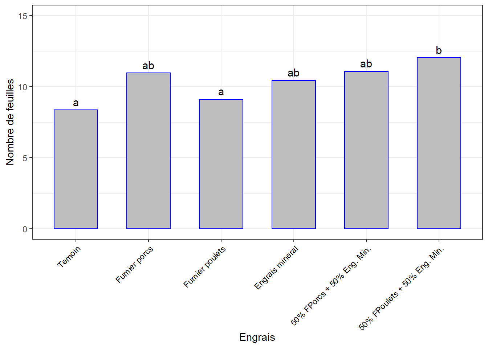
4.4 Feuilles 3
4.4.1 Visualisation, boxplots
bxp <- ggplot(df, aes(x = engrais, y = feuil3)) +
geom_boxplot() +
theme_bw() +
xlab("Engrais") + ylab("Nombre de feuilles") +
theme(axis.text.x = element_text(angle = 45, color = "black", vjust = 1, hjust = 1))
bxp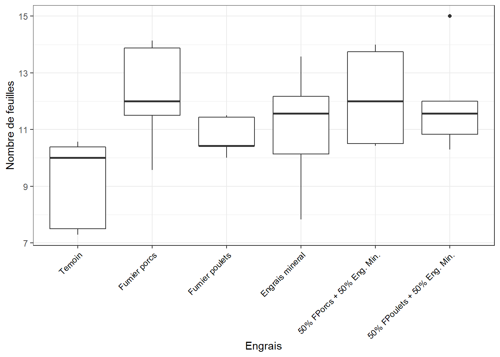
4.4.2 Identification des échantillons aberrants et extêmes
df_out <- df %>%
group_by(engrais) %>%
identify_outliers(feuil3) %>%
select(id, engrais, bloc, feuil3, is.outlier, is.extreme)
df_out## # A tibble: 1 x 6
## id engrais bloc feuil3 is.outlier is.extreme
## <int> <fct> <dbl> <dbl> <lgl> <lgl>
## 1 18 50% FPoulets + 50% Eng. Min. 3 15 TRUE FALSEIl n’y a pas d’observation aberrante extrême.
4.4.3 Le modèle ANOVA
## Anova Table (Type II tests)
##
## Response: feuil3
## Sum Sq Df F value Pr(>F)
## engrais 31.269 5 2.4482 0.06425 .
## Residuals 58.752 23
## ---
## Signif. codes: 0 '***' 0.001 '**' 0.01 '*' 0.05 '.' 0.1 ' ' 1À la semaine 6 après le repiquage, il n’y aurait pas d’effets significativement différents sur le nombre de feuilles des plants. Mais vérifions les conditions de validité de l’ANOVA.
4.4.5 Normalité des résidus
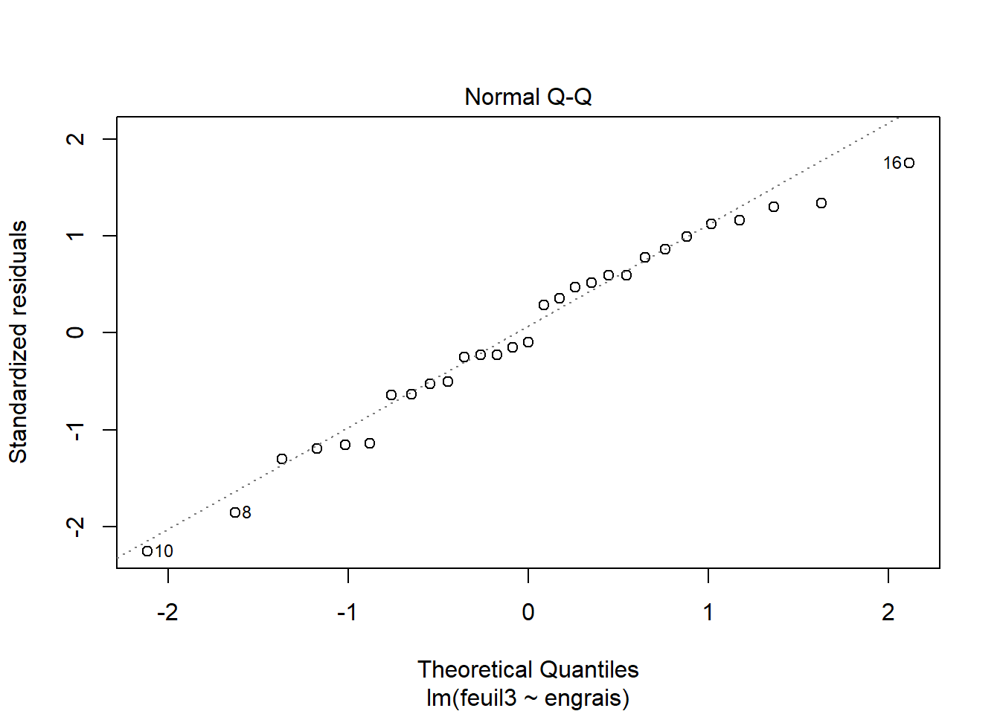
## # A tibble: 1 x 3
## variable statistic p.value
## <chr> <dbl> <dbl>
## 1 residuals(lm3) 0.974 0.6734.4.6 Homogénéité des variances
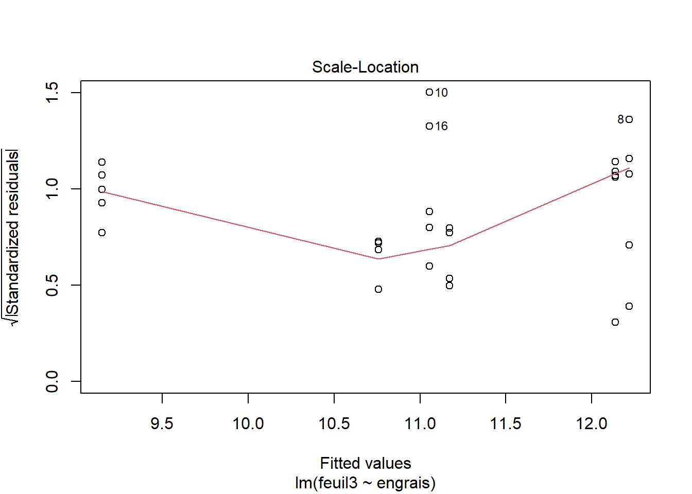
## # A tibble: 1 x 4
## df1 df2 statistic p
## <int> <int> <dbl> <dbl>
## 1 5 23 0.916 0.488On retient que la conclusion de l’ANOVA peut être considérée valide. Affichons quand même les comparaisons par paires.
4.4.7 Comparaisons par paires
Tests post-hoc de multiples comparaisons par paires entre les groupes (ici, les engrais).
4.4.8 Graph des comparaisons
4.4.9 Lettres pour différencier
## Temoin Fumier porcs
## "a" "a"
## Fumier poulets Engrais mineral
## "a" "a"
## 50% FPorcs + 50% Eng. Min. 50% FPoulets + 50% Eng. Min.
## "a" "a"4.4.10 Les lettres dans un dataframe pour ggplot
## engrais lettres
## Temoin Temoin a
## Fumier porcs Fumier porcs a
## Fumier poulets Fumier poulets a
## Engrais mineral Engrais mineral a
## 50% FPorcs + 50% Eng. Min. 50% FPorcs + 50% Eng. Min. a
## 50% FPoulets + 50% Eng. Min. 50% FPoulets + 50% Eng. Min. a4.4.11 Associer les moyennes et les écart-types pour le rapport
feuil3_moy <- df %>%
group_by(engrais) %>%
get_summary_stats(feuil3, type = "mean_sd") %>%
select(-variable) %>%
mutate(lettres = L$lettres)
write_csv(feuil3_moy, "tab/feuille3_moyennes.csv")
feuil3_moy## # A tibble: 6 x 5
## engrais n mean sd lettres
## <fct> <dbl> <dbl> <dbl> <chr>
## 1 Temoin 5 9.15 1.62 a
## 2 Fumier porcs 5 12.2 1.87 a
## 3 Fumier poulets 5 10.8 0.669 a
## 4 Engrais mineral 5 11.1 2.18 a
## 5 50% FPorcs + 50% Eng. Min. 5 12.1 1.71 a
## 6 50% FPoulets + 50% Eng. Min. 4 11.2 0.761 a4.4.12 Graphe avec les comparaisons
ggplot(feuil3_moy, aes(x = engrais, y = mean)) +
geom_bar(stat = "identity", color = "blue", fill = "grey", width = 0.6) +
ylim(0, 15) +
theme_bw() +
xlab("Engrais") + ylab("Nombre de feuilles") +
theme(axis.text.x = element_text(angle = 45, color = "black", vjust = 1, hjust = 1)) +
geom_text(aes(label = lettres), vjust = -0.5, size = 4)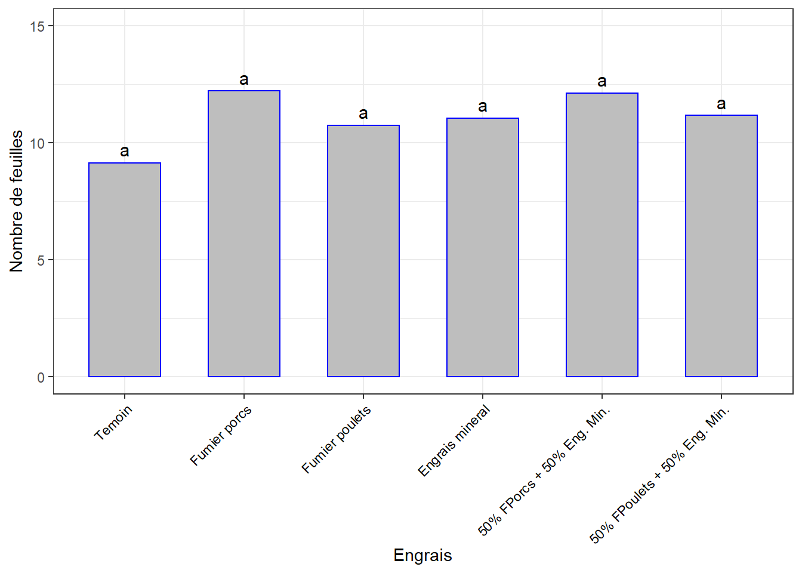
4.5 Feuilles 4
4.5.1 Visualisation, boxplots
bxp <- ggplot(df, aes(x = engrais, y = feuil4)) +
geom_boxplot() +
theme_bw() +
xlab("Engrais") + ylab("Nombre de feuilles") +
theme(axis.text.x = element_text(angle = 45, color = "black", vjust = 1, hjust = 1))
bxp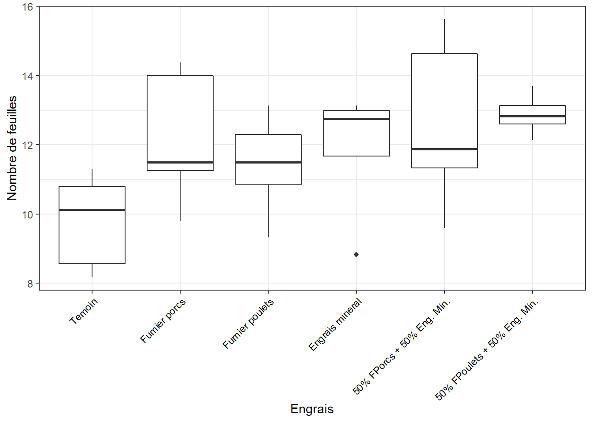
4.5.2 Identification des échantillons aberrants et extêmes
df_out <- df %>%
group_by(engrais) %>%
identify_outliers(feuil4) %>%
select(engrais, bloc, feuil4, is.outlier, is.extreme)
df_out## # A tibble: 1 x 5
## engrais bloc feuil4 is.outlier is.extreme
## <fct> <dbl> <dbl> <lgl> <lgl>
## 1 Engrais mineral 4 8.83 TRUE FALSEIl n’y a pas d’observation aberrante extrême.
4.5.3 Le modèle ANOVA
## Anova Table (Type II tests)
##
## Response: feuil4
## Sum Sq Df F value Pr(>F)
## engrais 30.830 5 2.1199 0.09774 .
## Residuals 69.808 24
## ---
## Signif. codes: 0 '***' 0.001 '**' 0.01 '*' 0.05 '.' 0.1 ' ' 1À la semaine 7 après le repiquage, il n’y aurait également pas d’effets significativement différents sur le nombre de feuilles des plants. Mais vérifions les conditions de validité de l’ANOVA.
4.5.5 Normalité des résidus
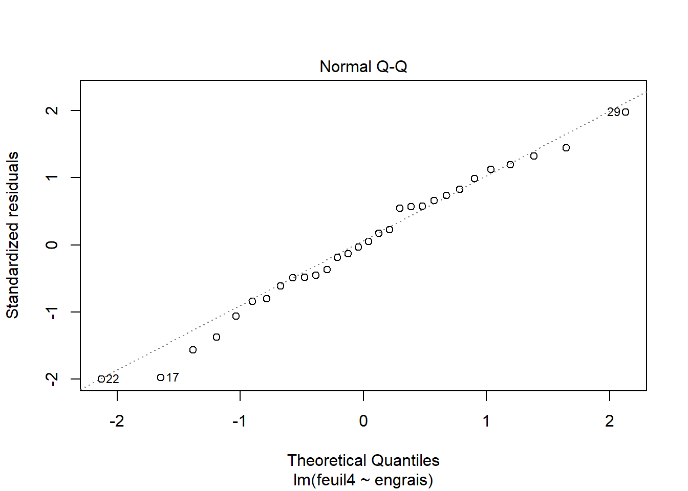
## # A tibble: 1 x 3
## variable statistic p.value
## <chr> <dbl> <dbl>
## 1 residuals(lm4) 0.981 0.8634.5.6 Homogénéité des variances
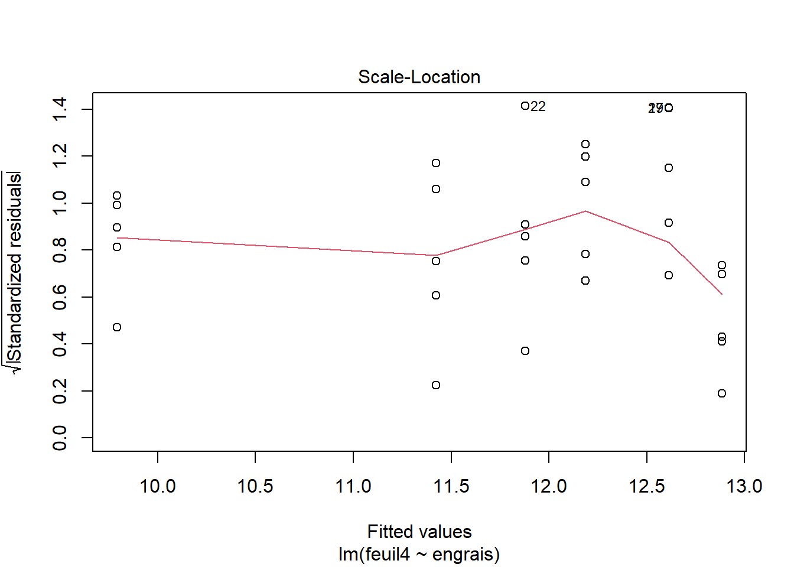
## # A tibble: 1 x 4
## df1 df2 statistic p
## <int> <int> <dbl> <dbl>
## 1 5 24 0.851 0.527On retient que la conclusion de l’ANOVA peut être considérée valide. Affichons quand même les comparaisons par paires.
4.5.7 Comparaisons par paires
Tests post-hoc de multiples comparaisons par paires entre les groupes (ici, les engrais) pour identifier ceux dont les effets sont différents.
4.5.8 Graph des comparaisons
4.5.9 Lettres pour différencier
## Temoin Fumier porcs
## "a" "a"
## Fumier poulets Engrais mineral
## "a" "a"
## 50% FPorcs + 50% Eng. Min. 50% FPoulets + 50% Eng. Min.
## "a" "a"4.5.10 Les lettres dans un dataframe pour ggplot
## engrais lettres
## Temoin Temoin a
## Fumier porcs Fumier porcs a
## Fumier poulets Fumier poulets a
## Engrais mineral Engrais mineral a
## 50% FPorcs + 50% Eng. Min. 50% FPorcs + 50% Eng. Min. a
## 50% FPoulets + 50% Eng. Min. 50% FPoulets + 50% Eng. Min. a4.5.11 Associer les moyennes et les écart-types pour le rapport
feuil4_moy <- df %>%
group_by(engrais) %>%
get_summary_stats(feuil4, type = "mean_sd") %>%
select(-variable) %>%
mutate(lettres = L$lettres)
write_csv(feuil4_moy, "tab/feuille4_moyennes.csv")
feuil4_moy## # A tibble: 6 x 5
## engrais n mean sd lettres
## <fct> <dbl> <dbl> <dbl> <chr>
## 1 Temoin 5 9.79 1.37 a
## 2 Fumier porcs 5 12.2 1.95 a
## 3 Fumier poulets 5 11.4 1.45 a
## 4 Engrais mineral 5 11.9 1.80 a
## 5 50% FPorcs + 50% Eng. Min. 5 12.6 2.47 a
## 6 50% FPoulets + 50% Eng. Min. 5 12.9 0.588 a4.5.12 Graphe avec les comparaisons
ggplot(feuil4_moy, aes(x = engrais, y = mean)) +
geom_bar(stat = "identity", color = "blue", fill = "grey", width = 0.6) +
ylim(0, 15) +
theme_bw() +
xlab("Engrais") + ylab("Nombre de feuilles") +
theme(axis.text.x = element_text(angle = 45, color = "black", vjust = 1, hjust = 1)) +
geom_text(aes(label = lettres), vjust = -0.5, size = 4)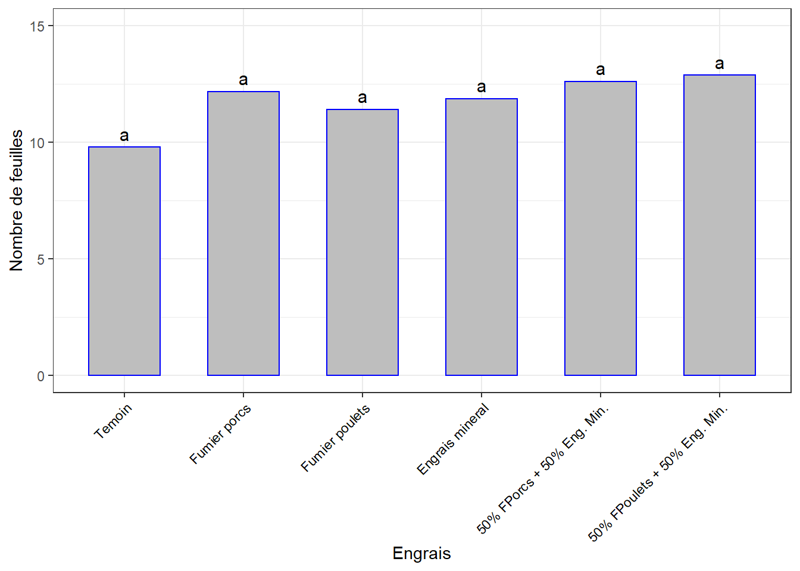
4.5.13 Évolution du nombre de feuilles dans le temps selon le type d’engrais
df <- df_original
df <- df %>%
gather(key = "temps", value = "feuille", feuil1, feuil2, feuil3, feuil4) #%>%
#convert_as_factor(temps)
df$temps[df$temps == "feuil1"] <- "21 JAR"
df$temps[df$temps == "feuil2"] <- "35 JAR"
df$temps[df$temps == "feuil3"] <- "42 JAR"
df$temps[df$temps == "feuil4"] <- "49 JAR"
df <- df %>%
convert_as_factor(temps)df_ic <- summarySE(df,
measurevar = "feuille",
groupvars = c("temps", "engrais"))
write_csv(df_ic, "tab/feuil_moy_temps.csv")
df_ic## temps engrais N feuille sd se ci
## 1 21 JAR Temoin 5 7.274 0.9401489 0.42044738 1.1673491
## 2 21 JAR Fumier porcs 5 8.178 0.5213636 0.23316089 0.6473584
## 3 21 JAR Fumier poulets 5 7.988 1.0582155 0.47324835 1.3139481
## 4 21 JAR Engrais mineral 5 8.098 0.4546097 0.20330765 0.5644725
## 5 21 JAR 50% FPorcs + 50% Eng. Min. 5 8.440 0.6612110 0.29570255 0.8210019
## 6 21 JAR 50% FPoulets + 50% Eng. Min. 5 8.394 0.1894202 0.08471127 0.2351962
## 7 35 JAR Temoin 5 8.370 1.9423826 0.86865989 2.4117865
## 8 35 JAR Fumier porcs 5 10.976 0.8469534 0.37876906 1.0516315
## 9 35 JAR Fumier poulets 5 9.124 1.0800370 0.48300725 1.3410431
## 10 35 JAR Engrais mineral 5 10.452 1.5476498 0.69213005 1.9216611
## 11 35 JAR 50% FPorcs + 50% Eng. Min. 5 11.090 1.3563185 0.60656409 1.6840919
## 12 35 JAR 50% FPoulets + 50% Eng. Min. 5 12.042 1.7135694 0.76633152 2.1276774
## 13 42 JAR Temoin 5 9.148 1.6150758 0.72228388 2.0053815
## 14 42 JAR Fumier porcs 5 12.218 1.8729175 0.83759417 2.3255342
## 15 42 JAR Fumier poulets 5 10.758 0.6693056 0.29932257 0.8310527
## 16 42 JAR Engrais mineral 5 11.056 2.1835476 0.97651216 2.7112324
## 17 42 JAR 50% FPorcs + 50% Eng. Min. 5 12.136 1.7091606 0.76435986 2.1222032
## 18 42 JAR 50% FPoulets + 50% Eng. Min. 5 11.938 1.8343037 0.82032555 2.2775888
## 19 49 JAR Temoin 5 9.792 1.3691676 0.61231038 1.7000462
## 20 49 JAR Fumier porcs 5 12.186 1.9457595 0.87017010 2.4159795
## 21 49 JAR Fumier poulets 5 11.424 1.4494240 0.64820213 1.7996976
## 22 49 JAR Engrais mineral 5 11.878 1.7989914 0.80453341 2.2337428
## 23 49 JAR 50% FPorcs + 50% Eng. Min. 5 12.614 2.4714429 1.10526286 3.0687017
## 24 49 JAR 50% FPoulets + 50% Eng. Min. 5 12.884 0.5884131 0.26314635 0.7306114ggplot(df_ic, aes(x = temps, y = feuille, colour = engrais, group = engrais)) +
geom_line(size = 1) +
geom_point(size = 2) +
ylab("Nombre de feuilles") + xlab("Temps") +
theme_bw()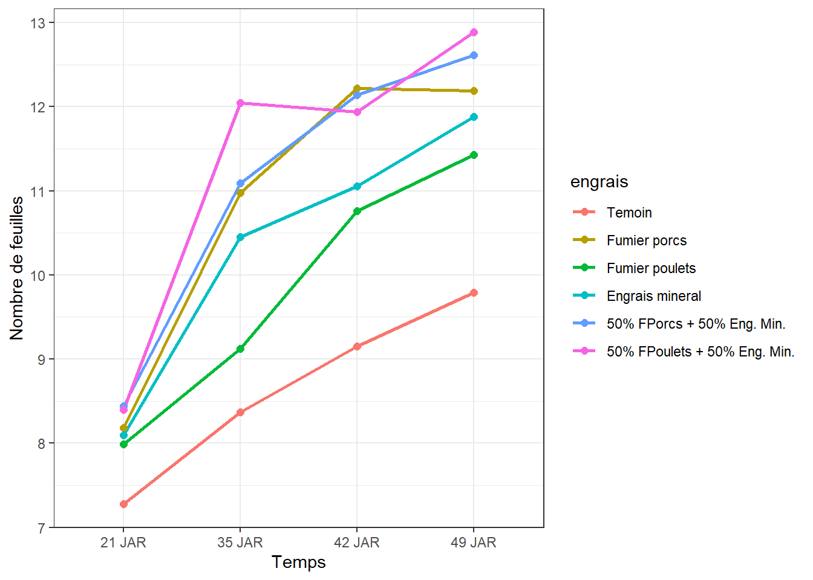